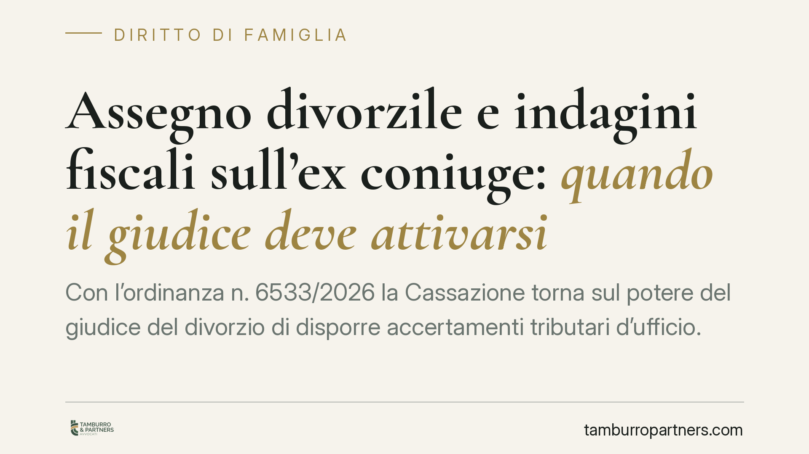

Assegno divorzile e indagini fiscali sull'ex coniuge: quando il giudice deve attivarsi
Con l'ordinanza n. 6533/2026 la Cassazione torna sul potere del giudice del divorzio di disporre accertamenti tributari d'ufficio. Il principio: non è un atto automatico, ma non può essere negato quando una parte offre elementi concreti che smentiscono le dichiarazioni economiche dell'ex coniuge. Un chiarimento rilevante per chi chiede e per chi contesta l'assegno divorzile.

Il principio affermato dalla Cassazione
Nei giudizi di divorzio capita spesso che una parte sospetti l'altra di dichiarare meno di quanto effettivamente guadagna o possiede. La domanda è: il giudice può indagare autonomamente sulla reale situazione economica dell'ex coniuge?
La Cassazione, con l'ordinanza n. 6533/2026, ha precisato un punto importante. Il potere di disporre indagini tributarie d'ufficio non è un atto dovuto che scatta su semplice richiesta, ma nemmeno una facoltà che il giudice può ignorare senza motivo. Quando la parte interessata fornisce elementi concreti — ad esempio una relazione investigativa o un documento che incide sul patrimonio — che rendono dubbia la veridicità delle dichiarazioni reddituali avversarie, il giudice non può legittimamente rifiutare l'accertamento officioso.
Indagini fiscali sull'ex coniuge: inquadramento normativo
La base normativa è l'art. 5, comma 6, della Legge 1° dicembre 1970, n. 898. La norma, oltre a fissare i criteri per l'attribuzione dell'assegno, consente al giudice di disporre indagini sui redditi, sui patrimoni e sull'effettivo tenore di vita, anche avvalendosi della polizia tributaria.
Si tratta di un potere istruttorio officioso, cioè esercitabile d'ufficio e in deroga al principio generale secondo cui le prove le forniscono le parti. Ma la deroga non è illimitata: il presupposto è che vi sia un onere di allegazione già assolto. In altre parole, la parte deve prima portare indizi specifici e circostanziati; solo allora si sblocca la possibilità per il giudice di approfondire d'ufficio. L'accertamento non può diventare uno strumento esplorativo, usato per cercare genericamente ciò che non si è in grado di provare.
Sul merito della funzione dell'assegno restano fermi due riferimenti distinti. Con la sentenza n. 11504/2017 la Cassazione ha superato il criterio del tenore di vita matrimoniale come parametro automatico di quantificazione. Le Sezioni Unite n. 18287/2018 hanno poi ridefinito la natura dell'assegno in senso composito: non più solo assistenziale, ma anche compensativo e perequativo, per riequilibrare i sacrifici e i contributi apportati durante il matrimonio. Sono due passaggi diversi: il primo supera l'automatismo del tenore di vita, il secondo ricostruisce la funzione dell'assegno.
Perché anche un lascito ereditario può contare
Tra gli elementi che possono giustificare un approfondimento figurano anche vicende patrimoniali come un'eredità ricevuta dall'ex coniuge. Attenzione però alla distinzione: un lascito ereditario non prova di per sé redditi occultati. Incide piuttosto sulla consistenza del patrimonio complessivo, che l'art. 5, comma 6, impone comunque di valutare ai fini della capacità economica. Un'eredità rilevante può quindi modificare il quadro di partenza, ma va letta per ciò che è: un dato patrimoniale, non la prova automatica di un reddito nascosto.
Implicazioni pratiche
Il chiarimento ha due facce.
Per chi chiede l'assegno, la pronuncia conferma che non basta affermare genericamente che l'ex coniuge "guadagna di più di quanto dichiara". Occorre portare in giudizio elementi concreti e verificabili. Se questi elementi esistono, però, il giudice non può archiviarli: deve attivare l'istruttoria.
Per chi è obbligato a versare l'assegno, il messaggio è che le dichiarazioni economiche non sono intoccabili. Di fronte a indizi seri, la propria situazione reddituale e patrimoniale può essere sottoposta ad accertamenti anche attraverso la polizia tributaria.
Cosa fare in concreto
- Raccogliete prove lecite e documentate. Una relazione investigativa redatta da un'agenzia regolarmente autorizzata, documenti patrimoniali, movimenti verificabili: sono questi gli elementi che assolvono l'onere di allegazione.
- Formulate richieste mirate, non esplorative. Indicate al giudice circostanze precise da verificare, non una generica richiesta di "indagare" sull'ex coniuge.
- Rivolgetevi a investigatori autorizzati. Le prove raccolte violando la privacy o con mezzi illeciti rischiano di essere inutilizzabili e controproducenti.
- Distinguete reddito e patrimonio. Se segnalate un'eredità o un bene, chiarite come incide sulla capacità economica complessiva, senza presentarla come prova di redditi nascosti.
- Se siete l'obbligato, aggiornate e documentate la vostra posizione. Una situazione economica trasparente e ricostruibile riduce lo spazio per contestazioni e accertamenti d'ufficio.
---
*Contributo informativo a cura di Tamburro & Partners Avvocati. Non costituisce parere legale.*
Ogni famiglia ha il suo equilibrio.
Separazione, divorzio, affidamento, assegno: se vuoi un confronto riservato su una specifica situazione, scrivi allo studio. Ti rispondiamo entro un giorno lavorativo.